한 줄 요약
흐름: 문제 정의 → 기존 방법의 한계 → INSID3의 접근 → 성능
DINOv3 하나만으로 — 어떤 학습도, SAM도 없이 — 원샷 세그멘테이션 SOTA를 평균 +7.5% mIoU 차이로 갱신한다.
In-context Segmentation(ICS)은 주석이 달린 예시 이미지(reference) 한 장을 참고해서 target 이미지의 임의 개념(객체, 부분, 특정 인스턴스)을 분할하는 task다. 기존 연구들은 크게 두 갈래였다.
- 파인튜닝 방식: DINOv2 위에 세그멘테이션 디코더를 학습. 인도메인 성능↑, 일반화↓
- 학습 없는 방식: DINOv2(대응) + SAM(마스크) 조합. 일반화↑, 구조 복잡↑, 두 모델 간 정보 손실
INSID3는 세 번째 길을 제시한다: DINOv3만 쓰되, 그 안에서 대응(correspondence)과 세그멘테이션을 동시에 해결한다.
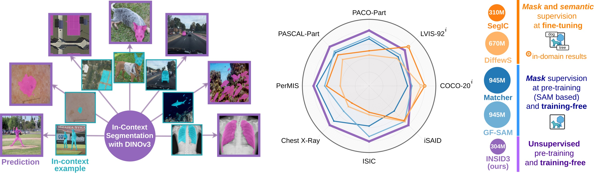
왜 DINOv3인가?
흐름: DINOv3의 특성 → clustering으로 확인
DINOv3는 대규모 이미지 코퍼스에서 순수 자기지도 학습된 Vision Foundation Model이다. 기존 DINO 계열과 다른 핵심 특성은 Dense localized features다. 패치 임베딩이 공간 구조를 강하게 보존하며, 같은 물체/부분에 속하는 패치들이 feature space에서 자연스럽게 뭉친다.
아래 그림은 DINOv3 피처에 agglomerative clustering을 적용했을 때의 결과다. 학습 없이, 별도 레이블 없이 물체와 부분이 색깔별로 분리된다.
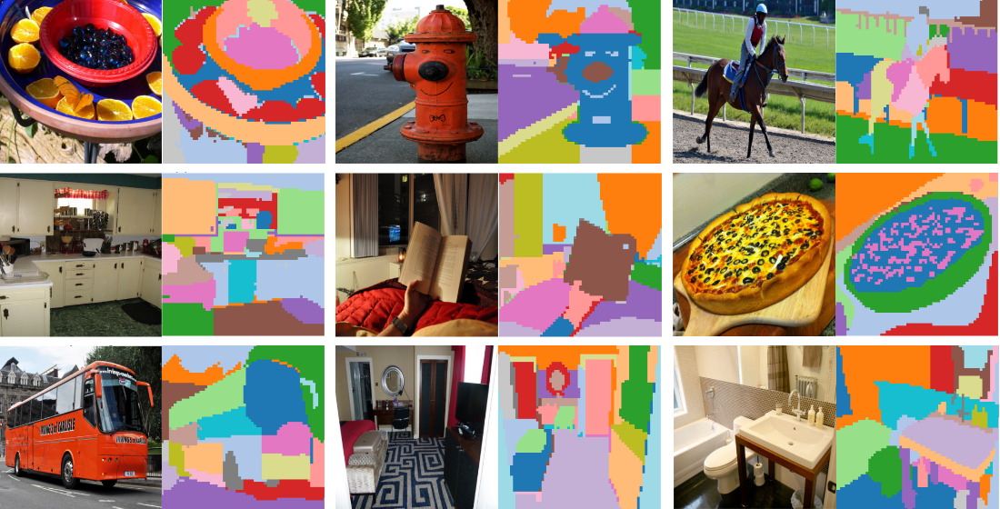
핵심 문제: Positional Bias
흐름: 문제 발견 → 원인 분석 → 해결책
DINOv3의 피처를 그대로 cross-image matching에 쓰면 치명적인 문제가 생긴다. 두 이미지에서 의미와 무관하게 같은 절대 좌표 위치끼리 유사하게 매칭되는 현상 — Positional Bias다.
아래 두 예시를 보자. Reference는 초록색 마스크로 개념을 표시하고, query는 같은 개념이 포함된 다른 이미지다.
예시 1: 야구 배트
(야구 배트 마스킹)
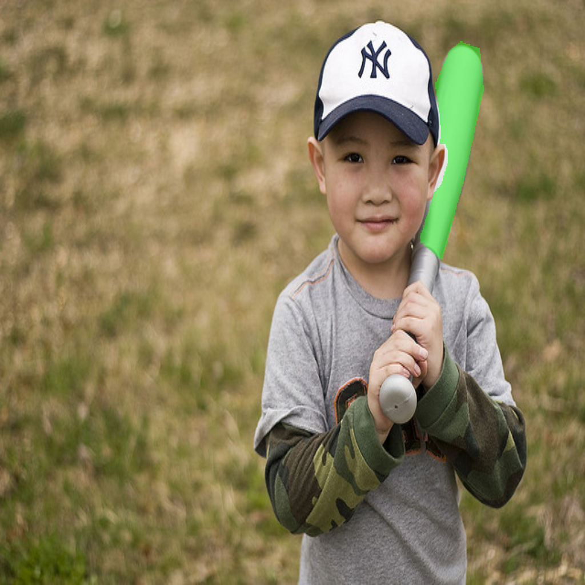
(아이 + 야구 배트)
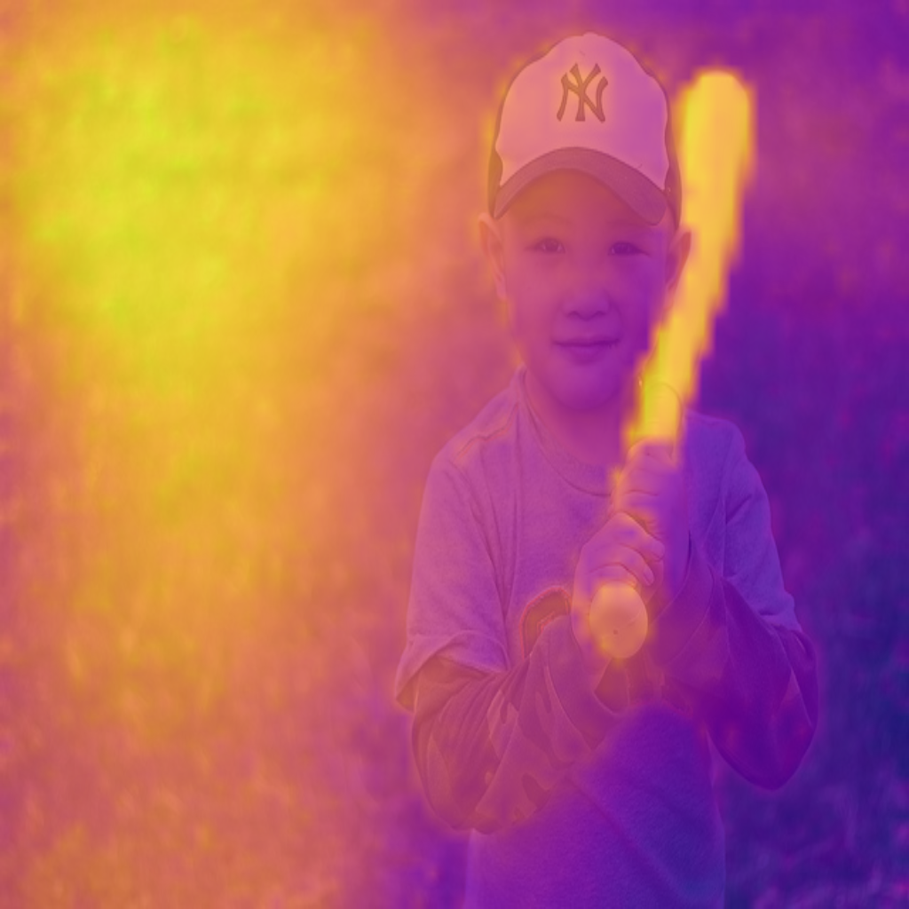
(debiasing 전)

(debiasing 후)
예시 2: 초록 박스 → 짐가방
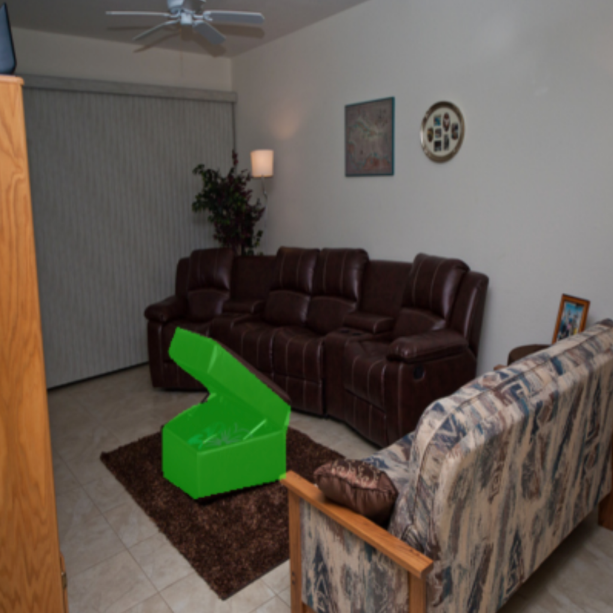
(초록 박스)
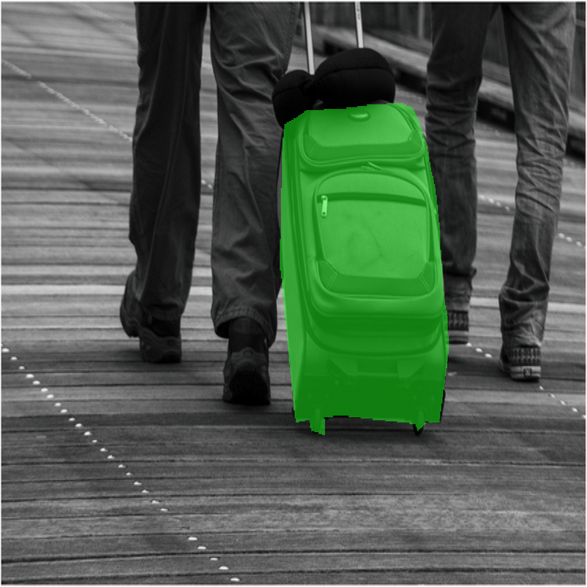
(짐가방)
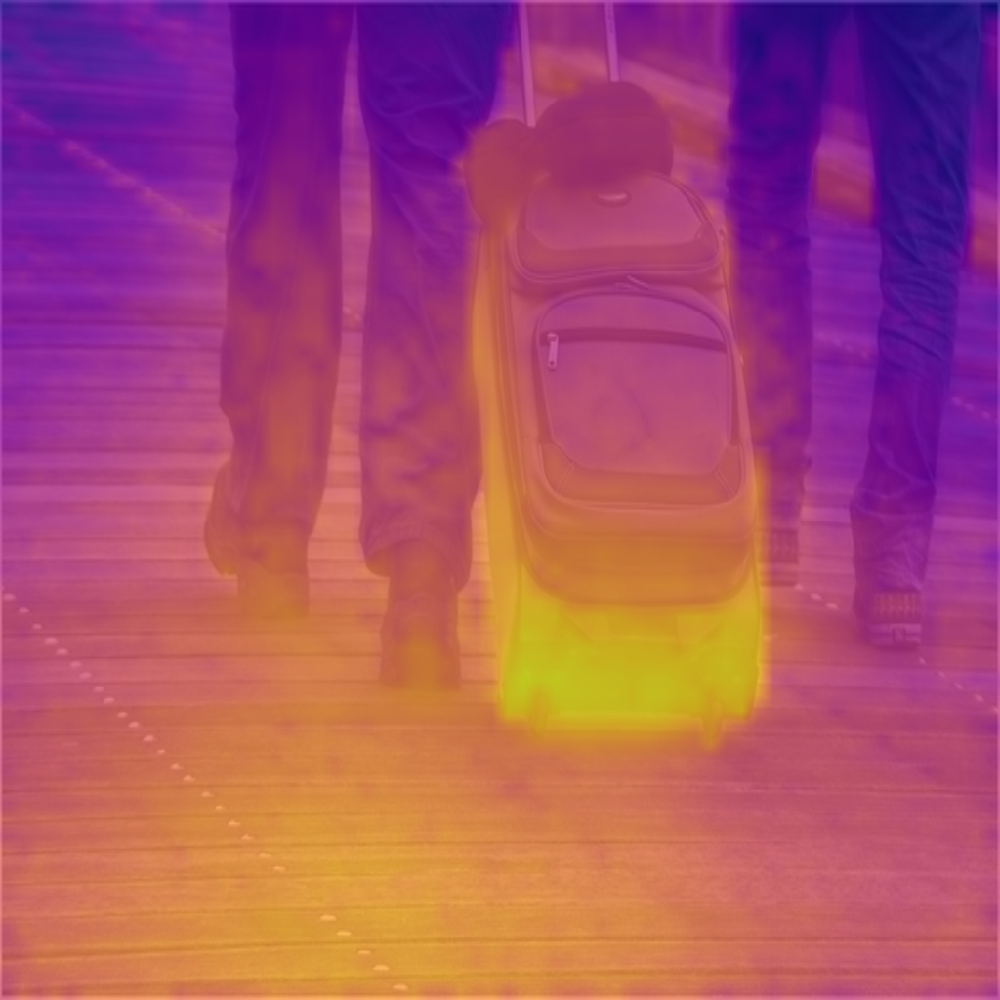
(하단 바닥에 활성화!)
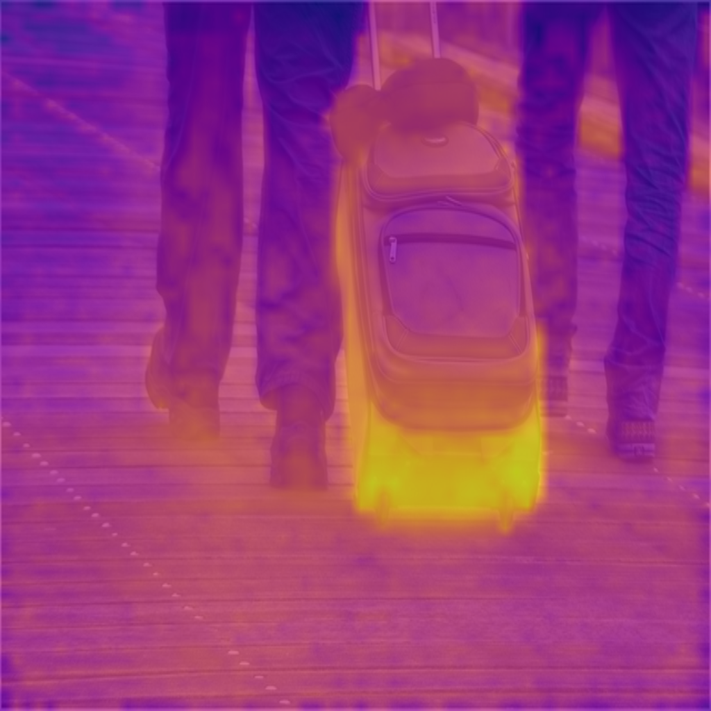
(가방에 집중)
예시 2가 특히 충격적이다. Reference의 초록 박스가 이미지 하단에 위치하니, query의 짐가방(이미지 중앙)을 찾아야 하는데 오히려 query 이미지 하단 바닥에 활성화가 몰린다. 의미가 아니라 위치 때문이다.
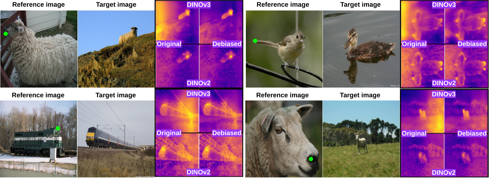
Debiasing: 노이즈 이미지로 위치 부분공간 제거
노이즈 이미지를 DINOv3에 통과시키면 의미 정보는 없고 위치 정보만 남은 피처를 얻는다.
$$ \mathbf{F}^{\text{noise}} = \Phi(\mathbf{I}^{\text{noise}}), \quad \mathbf{I}^{\text{noise}} \sim \mathcal{N}(\mathbf{0}, \mathbf{1}) $$
여기에 SVD를 적용해 상위 $s$개 우특이벡터 $\mathbf{B}$를 추출한다. 이것이 위치 부분공간이다. 실제 피처에서 이 부분공간을 orthogonal projection으로 제거한다:
$$ \tilde{\mathbf{F}} = \mathbf{F}(\mathbf{I}_D - \mathbf{B}\mathbf{B}^\top) $$
이렇게 얻은 debiased feature $\tilde{\mathbf{F}}$는 cross-image matching에, 원래 피처 $\mathbf{F}$는 intra-image clustering에 사용한다. 위치 정보가 intra-image grouping에서는 오히려 도움이 되기 때문이다.
INSID3 파이프라인
흐름: Clustering → Seed 선택 → Aggregation → 최종 마스크
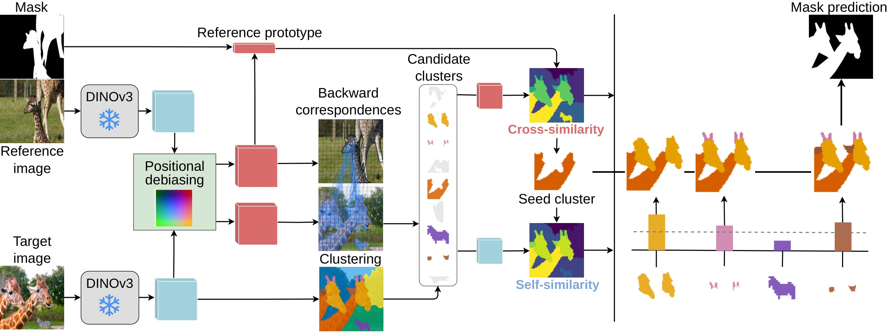
Fine-grained Clustering
Target 이미지의 원본 DINOv3 피처 $\mathbf{F}^t$에 agglomerative clustering을 적용한다. K-means와 달리 클러스터 수를 사전 지정할 필요 없고, 임계값 $\tau$ 하나로 granularity를 조절한다.
$$ \bigcup_{k=1}^K \mathcal{G}_k = \Omega, \quad \mathcal{G}_i \cap \mathcal{G}_j = \emptyset \quad \forall i \neq j $$
DINOv3의 공간적 일관성 덕분에 클러스터가 자연스럽게 의미 단위로 묶인다.
Seed-cluster Selection
후보 추리기 — Backward Matching: 각 target 패치 $i$에서 reference 피처로 nearest neighbor를 찾는다. 이 NN이 reference 마스크 안에 있는 경우만 후보 $\mathcal{C}_\text{NN}$으로 남긴다.
$$ \text{NN}(i) = \arg\max_{j} \langle \tilde{\mathbf{F}}^t_i, \tilde{\mathbf{F}}^r_j \rangle, \quad \mathcal{C}\text{NN} = {i \mid \mathbf{M}^r{\text{NN}(i)} = 1} $$
Forward matching("reference prototype → target 전체")보다 backward matching이 유리한 이유: target 패치들이 reference의 non-mask 영역을 암묵적으로 negative로 활용하기 때문이다. 특히 personalized segmentation에서 distractor 억제에 효과적이다.
Seed 선택: 후보 클러스터 각각의 prototype과 reference prototype 사이 cross-image similarity를 계산해 가장 높은 클러스터를 seed $\mathcal{G}^*$로 선택한다.
$$ s^\text{cross}k = \langle \tilde{\mathbf{p}}^t_k,, \tilde{\mathbf{p}}^r \rangle, \quad \mathcal{G}^* = \arg\max{\mathcal{G}k \in \mathcal{C}\text{cand}} s^\text{cross}_k $$
Cluster Aggregation
Seed 클러스터만으로는 개념의 일부(예: 기린 목)만 덮는 경우가 많다. 나머지 후보 클러스터를 병합할지 결정하는 combined score:
$$ S_k = s^\text{cross}_k \cdot s^\text{intra}_k $$
- $s^\text{cross}_k$: debiased 피처 기반 reference와의 의미적 유사도 (cross-image)
- $s^\text{intra}_k$: 원본 피처 기반 seed 클러스터와의 구조적 일관성 (intra-image)
두 score를 곱해서 둘 다 높은 클러스터만 병합하므로, 뷰포인트 변화나 occlusion이 있어도 개념의 전체 범위를 깔끔하게 복원한다.
$$ \mathcal{M}_\text{final} = \mathcal{G}^* \cup {\mathcal{G}k \in \mathcal{C}\text{cand} \mid S_k \geq \alpha} $$
실험 결과
흐름: Semantic → Part → Personalized 세그멘테이션 순서로 결과 확인
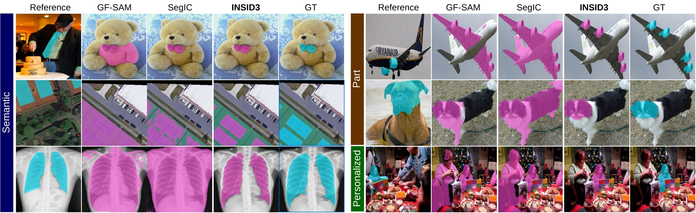
| 방법 | 학습 | COCO-20ⁱ | Chest X-ray | PASCAL-Part | PerMIS | 파라미터 |
|---|---|---|---|---|---|---|
| SegIC | ✅ 파인튜닝 | 76.1 | 낮음 | 39.9 | 51.8 | ~950M |
| GF-SAM | ❌ | 55.1 | 낮음 | 44.5 | 54.1 | 945M |
| INSID3 (ours) | ❌ | 57.6 | +27.8%↑ | 50.5 | 67.0 | 304M |
주목할 점들:
- 파라미터 3배 절감: 945M → 304M, 성능은 오히려 높음
- Chest X-ray +27.8%: 학습 데이터에 없는 도메인에서 일반화가 얼마나 중요한지 보여줌
- PerMIS +12.9%: Backward matching이 distractor를 암묵적으로 억제해 개인화 세그멘테이션에서 압도적
- 파인튜닝 모델 vs 인도메인: SegIC는 COCO에서 76.1%로 앞서지만, 다른 도메인에서 급락 — 특화의 트레이드오프
Debiasing의 범용성: Semantic Correspondence
흐름: ICS 너머 다른 task에도 통하는가
Positional Bias는 ICS에만 국한된 문제가 아니다. 이미지 간 keypoint를 매칭하는 semantic correspondence task에서도 동일한 문제가 생긴다.
아래 4쌍의 예시에서, 각 이미지 쌍의 파란 점이 reference keypoint이고 빨간 점이 모델이 예측한 target keypoint다.
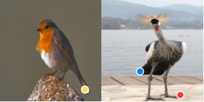
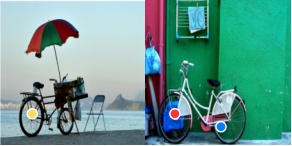
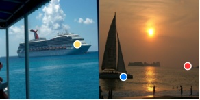
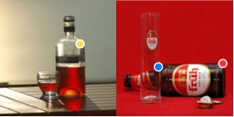
SPair-71k 벤치마크에서 DINOv3에 debiasing을 적용하면 PCK가 +0.9~+6.6% 향상된다. 별도 학습 없이 피처 전처리만으로 얻는 공짜 성능 향상이다.
요약
INSID3는 "더 많은 모델을 조합할수록 좋다"는 통념을 뒤집는다.
- Positional Bias 발견 & 제거: 노이즈 이미지 한 장으로 DINOv3의 위치 편향을 추정·제거. ICS 너머 semantic correspondence에도 즉시 적용 가능
- Agglomerative Clustering: 클러스터 수 미리 정하지 않아도 DINOv3 공간 일관성과 시너지로 의미 단위 분할
- Seed + Aggregation: Cross-image와 intra-image similarity를 곱셈 결합해 개념의 전체 범위를 정확하게 복원
단 하나의 자기지도 모델로, 복잡한 파이프라인 없이 SOTA를 달성한다.